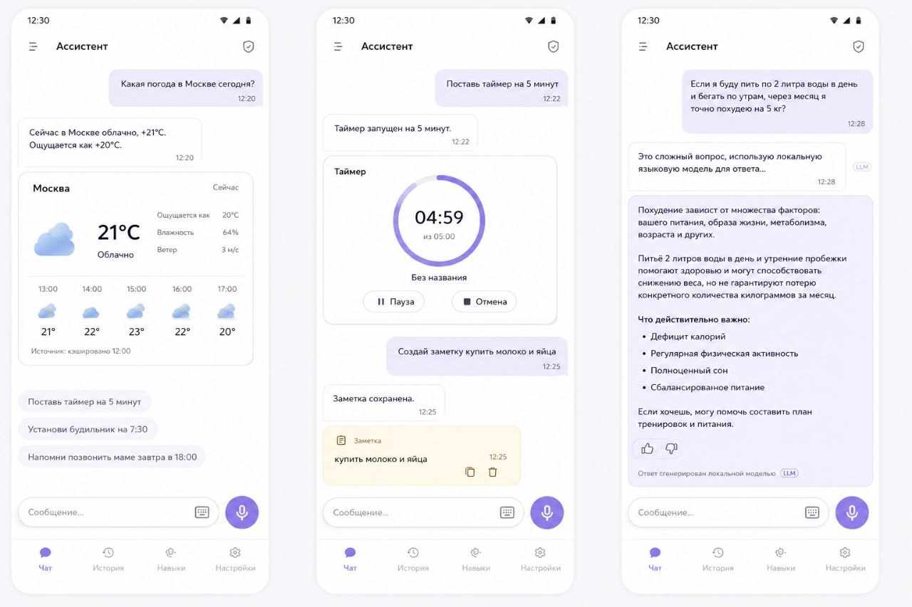
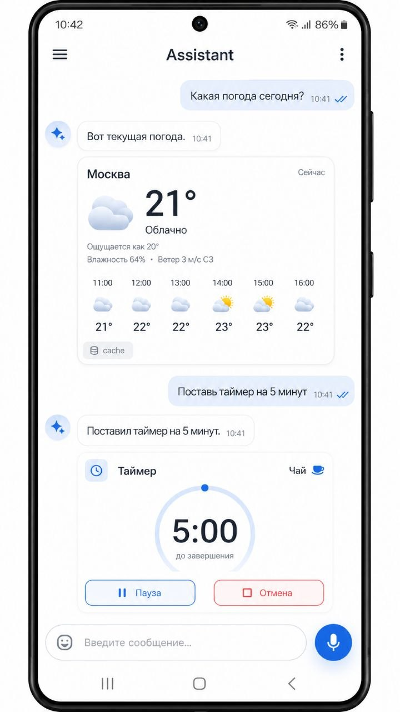
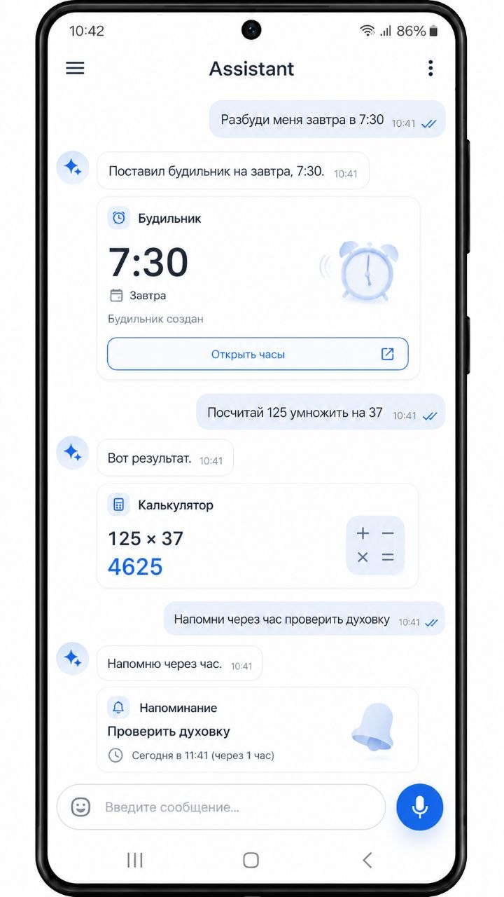

Triptych: погода, таймер/заметка, ответ локальной LLM.
Вариант A · Blue Reference
Android-first визуальный стенд для сверки Compose UI с моками. Whisper распознает голос, RuBERT выбирает действия и виджеты, Qwen отвечает текстом на сложные вопросы через локальная модель.

Triptych: погода, таймер/заметка, ответ локальной LLM.

Single-phone reference: WeatherCard и TimerCard.

Single-phone reference: AlarmCard, CalculatorCard, ReminderCard.